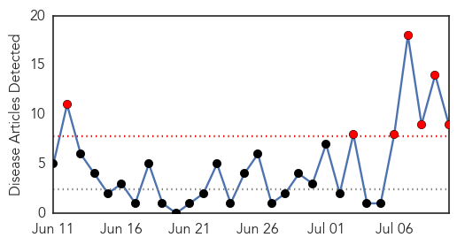

30 Day Trends
Web: 7 alerts, 0 warnings
Twitter: 0 alerts, 0 warnings
Top Articles:
- 0.993
- West Nile virus activity on the rise
- 0.971
- Mosquitoes with West Nile found across Ohio
- 0.955
- West Nile Virus Detected in Pinellas
- 0.935
- West Nile Virus Detected In Will County « CBS Chicago
- 0.931
- Health department warns of increased West Nile virus activity
- 0.927
- West Nile confirmed in Butler County
- 0.921
- West Nile virus is confirmed in Oklahoma County resident
- 0.795
- Colorado Communities Take Action To Prevent Spread Of West Nile Virus « CBS Denver
- 0.566
- REGION: Horse deaths spur concern
Top Tweets:
-
No tweets found for Jul 10, 2015
Web/News Articles
Tweets

Article Locations